硬盘分割
==>
SPFdisk
SPFdisk 是一套由国人开发完成的全中文接口的硬盘分割工具，他要比微软出的 Fdisk 功能强多了，他的好处除了==>全中文接口让你一定可以看的懂之外，简单的类图形接口可以让你轻易的进行硬盘分割，除此之外，这套软件的『DOS工具』内的『格式化工具』格式化硬盘的速度真是 DOS 比不上的，我格式化一个 30GB 的硬盘不用十秒就可以格式化完全！<==另外，其他的优点我在此也不多说了，若有需要你可以自行自一些搜寻网站下载最新的程序，或从这里下载我有的程序，不过可能旧一点。另外，由于 DOS 的 Fdisk 并不认识 Linux 的分割表，所以用 DOS 的 Fdisk 是无法将 Linux 的分割表去除的。因此，你要删除 Linux 的分割表，只有两个比较快的方法，一个是以 Linux 直接再分割，一个则是使用 SPfdisk 分割啦！
由于这个页面的档案很大，有时候会有没办法显示的情况发生，这时请在画面上『按鼠标右键』，再选择『显示图片』这个选项，即可显示画面啦！
硬盘分割主要可分为下面几个步骤：
1. 删除原有分割：2002/ 01/01以来统计人数假设你的主机中没有任何系统存在，则请以 Windows98 制作开机片后，将 spfdisk 拷贝至开机片。以此磁盘开机之后，执行：
A:>spfdisk 会出现如下欢迎画面。
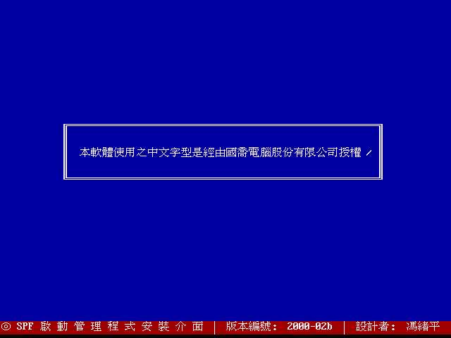 按任意键后出现下面画面：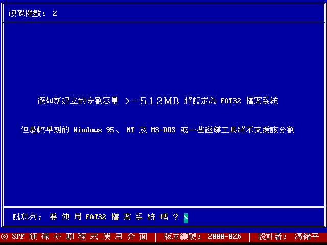 这是向你询问是否需要使用 FAT32 的文件系统，由于 Windows 98 支持的长文件名及相关的档案型态是以 FAT32 为准，所以当然按 『Y』！按了 Y 之后会出现硬盘的信息，如下所示：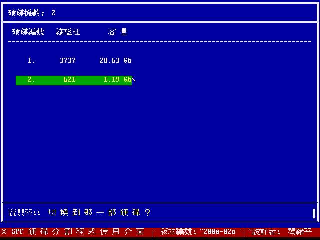 因为我是在我原有的机器上执行这个程序，所以会有两颗硬盘，如果你的系统只有一颗硬盘的话，则只会显示你有的硬盘数据，在上图中，1.19GB 的硬盘其总磁柱仅有 621 单位，比可启动扇区范围（0 ~ 1023）小得多，所以可以随意分割。将光标以箭头键移动至 1.19GB 这颗硬盘后，按 Enter ：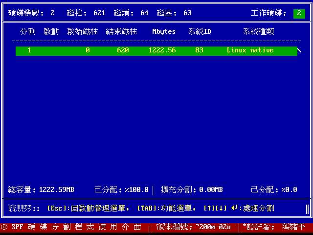 因为这颗硬盘之前被我灌过 Linux ，所以会显示 Linux 的扇区划分情况。上面的意义为：将光标以箭头键移动至这个扇区后，按 Enter ：
- 启动：由于系统开机时会去先去找分割表，由分割表所设定的『可启动扇区』进行开机程序，因此若这个扇区为启动扇区，则『启动』项目会有一个心型的符号存在！
- 起始磁柱与结束磁柱：这一个被分割的扇区的开始与结束扇区。
- MBytes：这个扇区的硬盘容量。
- 系统 ID 与系统种类：这一个分割表的类型。因为这是 Linux 的分割类型，所以其 ID 显示为 83，若是 FAT32 的话，则为 0b。
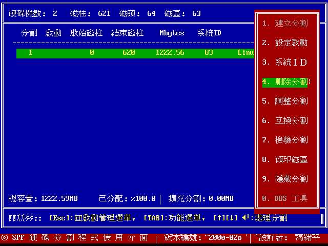 在这个画面中，将光标以箭头键移动至『删除分割』这个项目，并按下 Enter ：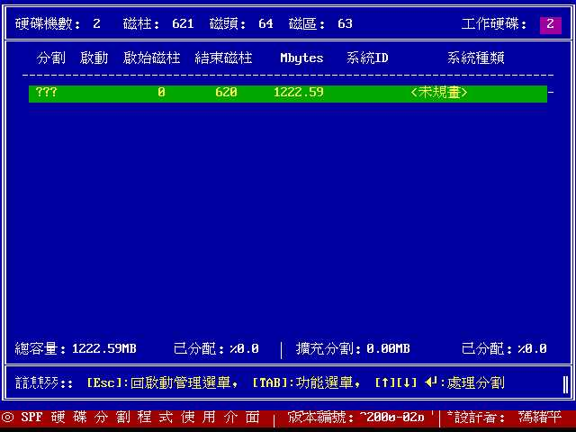 删除分割之后你的硬盘中就没有分割表的存在了，所以这个硬盘的系统种类则变成了<未规划>。2. 建立主要分割扇区：在上面的画面中，按下 Enter 键，会出现下面画面。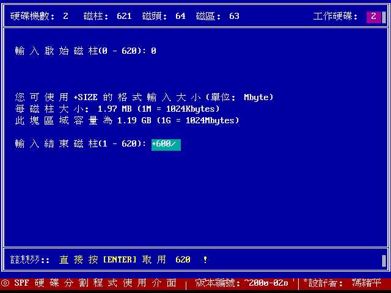 由于你选择了『不要配置整个区域为一块扇区』，所以这时程序要你输入你所需要的扇区。通常在第一步是输入『启始磁柱』，这时只要按 Enter 就可以啦，然后会要你输入『结束磁柱』，结束磁柱的输入方法有两种模式，一种是输入磁柱区，一种是输入你所需要的 MB 数，通常我是输入 MB 数啦，例如如上所示，我所需要的空间大小是 600MB ，所以输入『+600』即可，而如果你的硬盘很大，你要输入 4GB 时，则需要输入 『+4000』，以此类推！输入『+600』并按 Enter 之后出现如下画面。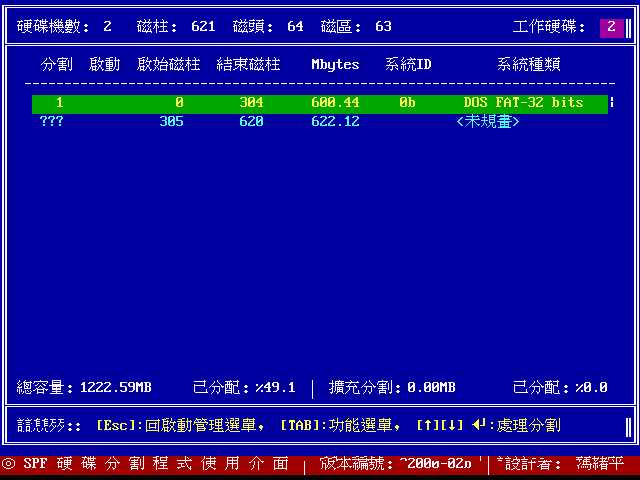 这时出现了你刚刚划分的硬盘信息啦，由于我们是划分为 DOS 分割区，所以系统种类是 FAT-32 ，而 ID 则为 0b 。至于另外尚未划分的就会显示为 <未规划> 啦！如果你还需要再继续划分的话，这时将光标移动至 <未规划> 的那一个扇区按 Enter 后选择『扩充分割』即可继续划分。如果划分完毕之后，当然就是贮存分割表啰。这里注意一下，因为刚刚的动作均尚未完成贮存的工作，所以要反悔还来得及！3. 贮存分割表：接下来要做贮存的动作了，按下『Esc』键（键盘左上角那个键）后会出现如下画面：
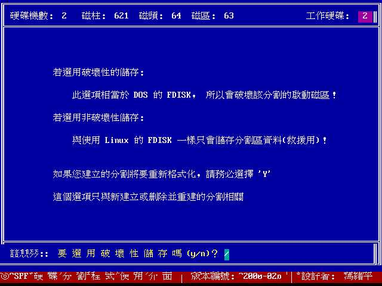
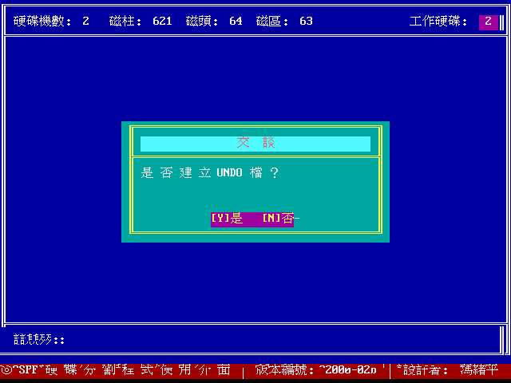
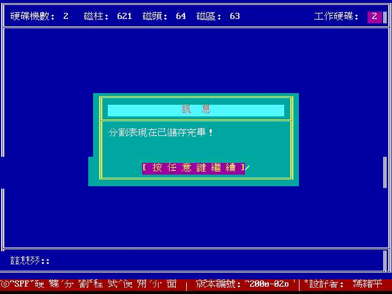
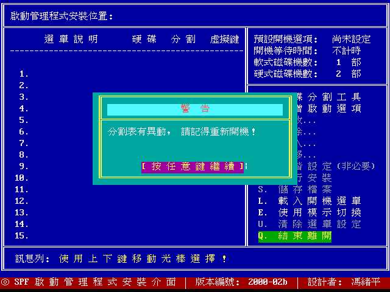
这里的动作是连续的：4. 格式化硬盘这样一来你的硬盘就划分完毕而且贮存啦！这时要做的就是重新启动并格式化硬盘。格式化硬盘可以使用 DOS 的 Format ，当然也可以使用 spfdisk 的内建功能喔！
- 程序会先跟你确认你的硬盘有没有错误，这里还可以反悔。
- 然后程序会问你是否需要使用破坏贮存，一般来说是需要使用『破坏贮存』的，因为需要将你的硬盘划分完全啦！所以要按 [Y]；
- 为了可以让你以后回复分割情况，所以你可以选择 『建立 UNDO』档，所谓的 UNDO 文件即是记录你之前硬盘分割表信息的档案啦。
再进入刚刚你划分完毕的那个硬盘区，按下 Enter 之后会出现一串选单，然后最下方的选单为 『DOS 工具』，选择这一项并按 Enter 后，会出现另一个选单：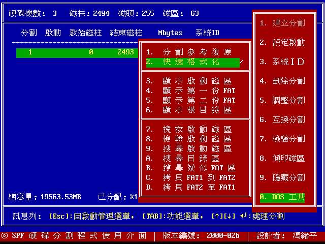